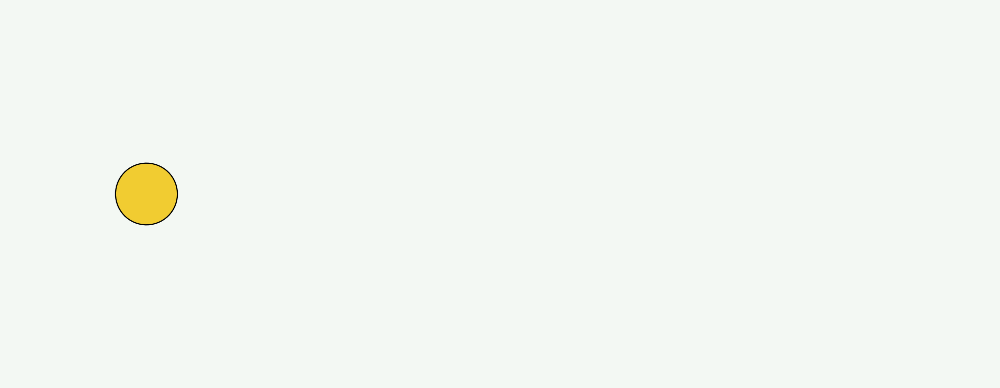
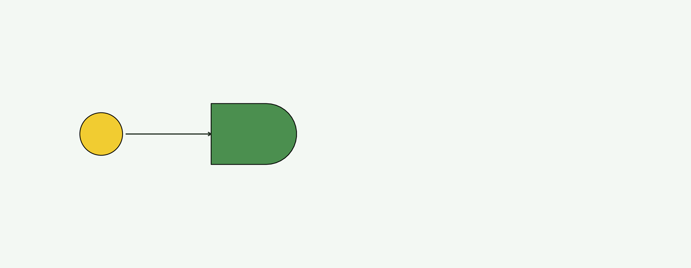
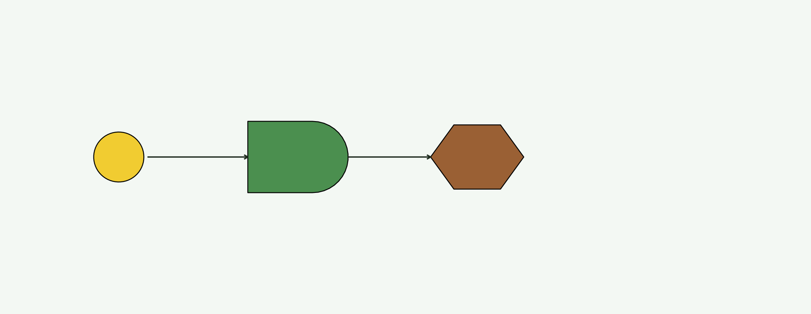
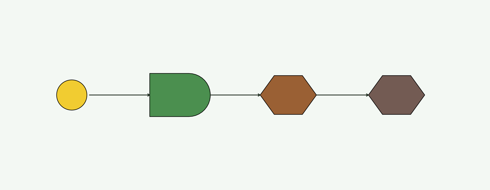
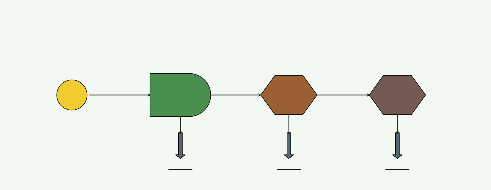
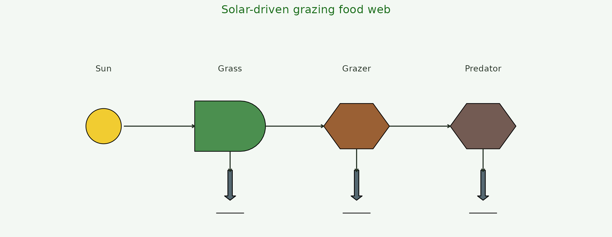

Step-by-step: building a food web one geom at a time
Source:vignettes/step-by-step.Rmd
step-by-step.RmdThis vignette watches a food web assemble one
geom_odum_* layer at a time. Same data, six versions of the
plot — each step adds one symbol. Copy the final block, tweak the data,
and you have your own diagram.
library(ggplot2)
library(energese)
nodes <- data.frame(
x = c(1, 3.5, 6, 8.5),
y = 2,
role = c("Sun", "Grass", "Grazer", "Predator"))
ink <- "#1d2a1d"1. An empty canvas
Start with ggplot() on the node data,
coord_fixed() for equal-scale drawing, and
theme_void() for a clean background.
base <- ggplot(nodes, aes(x, y)) +
coord_fixed(xlim = c(0, 10), ylim = c(0, 4)) +
theme_void()
base2. Add the sun (source)
geom_odum_source() — a filled circle.
radius controls the size.
p2 <- base +
geom_odum_source(data = nodes[1, ], radius = 0.35, fill = "#F1C40F")
p2
3. Add the primary producer (grass)
geom_odum_producer() — the Odum “bullet” shape.
Autocatalytic units that capture and concentrate emergy.
p3 <- p2 +
geom_odum_producer(data = nodes[2, ], width = 1.4, height = 1.0,
fill = "#2E7D32")
p34. Draw the sun→grass flow
Arrows between symbols are just annotate("segment", ...)
calls with an arrow() argument — no special geom
needed.
p4 <- p3 +
annotate("segment", x = 1.4, xend = 2.8, y = 2, yend = 2,
arrow = arrow(length = unit(0.12, "cm")), colour = ink)
p4
5. Add the grazer and its flow
Grazers are geom_odum_consumer() (a hexagon). Then draw
the grass→grazer arrow.
p5 <- p4 +
geom_odum_consumer(data = nodes[3, ], width = 1.3, height = 0.9,
fill = "#8B4513") +
annotate("segment", x = 4.2, xend = 5.35, y = 2, yend = 2,
arrow = arrow(length = unit(0.12, "cm")), colour = ink)
p5
6. Add the top predator + its flow
Same geom family, different fill. Grazer→predator arrow closes the chain.
p6 <- p5 +
geom_odum_consumer(data = nodes[4, ], width = 1.3, height = 0.9,
fill = "#5D4037") +
annotate("segment", x = 6.65, xend = 7.85, y = 2, yend = 2,
arrow = arrow(length = unit(0.12, "cm")), colour = ink)
p6
7. Second-law bookkeeping: heat sinks
Every transformation dissipates heat. Add one
geom_odum_heat_sink() under each consumer.
sinks <- data.frame(x = c(3.5, 6, 8.5), y = 0.7)
p7 <- p6 +
geom_odum_heat_sink(data = sinks, width = 0.55, height = 0.85,
fill = "#455a64") +
annotate("segment", x = 3.5, xend = 3.5, y = 1.5, yend = 1.1,
arrow = arrow(length = unit(0.12, "cm")), colour = ink) +
annotate("segment", x = 6, xend = 6, y = 1.55, yend = 1.1,
arrow = arrow(length = unit(0.12, "cm")), colour = ink) +
annotate("segment", x = 8.5, xend = 8.5, y = 1.55, yend = 1.1,
arrow = arrow(length = unit(0.12, "cm")), colour = ink)
p7
8. Labels + final polish
Label each node, tighten the frame, add a title. Now it’s a diagram.
p8 <- p7 +
geom_text(aes(y = 3.15, label = role), size = 3.2, colour = ink) +
labs(title = "Solar-driven grazing food web") +
theme(plot.title = element_text(hjust = 0.5, size = 12, colour = "#176b17"))
p8
What just happened
Every ESL diagram is the same recipe: an x/y node table,
one geom_odum_* per node kind,
annotate("segment", ...) for the flows,
geom_odum_heat_sink() under every transformation, labels
via geom_text(). That’s the entire grammar. See the
case-studies vignette
(vignette("case-studies", package = "energese")) for four
worked classical Odum systems built on this same recipe.